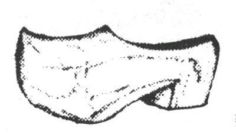

Wooden shoes, or in the Dutch, "klompen," are called "sabots" by the French. Throw klompen into the inner workings of windmills and you break the gears, causing the mechanism driving the pumps to grind to a halt and thus allowing water to flood the fields, hampering enemy operations. This is called "sabotage.""The saboteur is a man of violence and action. He must teach and inspire the people in occupied and enemy countries to harass and destroy the enemy and his works." -- Dr. Stanley P. Lovell, OSS scientist.
My thanks to Mike H. for this interesting link (http://www.realmilitaryflix.com/public/department61.cfm) to secret OSS training films from World War II, detailing the deployment of sabotage devices such as "Caccolube," "Fireflies," and the spigot mortar.
Searching for more information on Caccolube, I found this, "A History of Engine Defeat Through Chemical Means" (http://www.docstoc.com/docs/2197935/A-History-of-Engine-Defeat-Through-Chemical-Means-A-History-of) by Kenneth R. Collins and Donald R. Bowie of the US Army's Edgewood Chemical Biological Center at Aberdeen Proving Ground and this, (http://www.omnipresence.mahost.org/ch5txt.htm) an environmental "monkeywrencher's" guide to equipment sabotage.
However, most interestingly I also found this memoir (http://www.archive.org/stream/ofspiesstratagem001373mbp/ofspiesstratagem001373mbp_djvu.txt) entitled OF SPIES & STRATAGEMS by Stanley P. Lovell, an American scientist who was in the middle of the invention and production of these devices (and many more) for OSS. It is long, but it is worth the time to the budding Three Percenter to consider the many useful ideas therein.
Remember, there are no obsolete weapons, only obsolete tactics.
Mike
III
From OF SPIES & STRATAGEMS by Stanley P. Lovell --
SCHEMES AND WEAPONS
Another device we made for intelligence agents originated when a spy told me he was all but trapped in the Adlon Hotel in Berlin. "I would have given anything," he said, "if I could have created a panic in that lobby. As it was they picked up someone else, Gott sei dank."
My answer to the spy's suggestion was "Hedy." Hedy was a simple firecracker device which, when you pulled a small wire loop, simulated the screeching Doppler effect of a falling Nazi bomb and then ended in a deafening roarbut all completely harmless. By activating Hedy the agent could have a chance to escape in the turmoil he had created. It was named after Hedy Lamarr, because my lusty young officers said she created panic wherever she went.
General Donovan and I gave lectures before many mili tary groups. I vividly recall one on August 28, 1943 before the Joint Chiefs of Staff. After General Donovan's talk on O.S.S. objectives, he asked me to demonstrate several of our simpler devices. I showed our "booby-traps," our derailing system for enemy trains and our incendiaries, and I explained the need and use for Hedy Lamarr. As I spoke I activated one and dropped it casually into a nearby metal wastebasket. Hedy interrupted me by suddenly shrieking and howling with an ear-piercing wail Then came the deafening bang. To my surprise I saw two- and three-star Generals clawing and climbing to get out through the room's single door. It was a most successful demonstration, but somehow we were never again invited to put on a show before the Joint Chiefs of Staff. General Donovan said, "Professor Moriarty, we overdid that one, I think."
SUPPLYING THE SABOTEURS
The saboteur is a man of violence and action. He must teach and inspire the people in occupied and enemy countries to harass and destroy the enemy and his works.
As we entered the war, most saboteurs had nothing to work with. If they decided to burn down a German ammuni tion dump or a Nazi headquarters, they had to be there with a match and kerosene. Of course the Gestapo threw a noose around the site and our saboteur was shot forthwith. It is true that the British had a time-delay pencil, but that was all.
Dr. Bush instituted a special Division of O.S.R.D. to serve us in O.S.S. It was Division 19, headed by Dr. H. M. Chadwell and his brilliant assistant Dr. W. C. Lothrop.
Our first weapon in the arsenal was a pocket incendiary, the size of a small booklet. It was a celluloid case filled with napalm jelly with an ignition that could be set for any time you wished, from fifteen minutes to three days. Now the saboteur could be conspicuously protesting his ration allowance at German headquarters when the ammunition dump went up, and his alibi was impregnable. The success of this simple device led to a wave of requests from resistance groups.
How to derail a train was a common question and, we thought, an easy one to answer simply take out one rail and the train falls over. It just doesn't work. Saboteurs were sus pected of lying when they reported they had done this on the Orient Express, yet it came in on time. We studied the situa tion with the Corps of Engineers and proved it didn't work. After months we learned how to do it, but the solution is still not publishable information.
The Polish Underground officers I met laughed at all such subtleties. Their leader said, "Lovell, it's nonsense to be so complicated. We put two men out where the train runs" through a cut like a slice through a little hill. As the engine passes below them, each throws a hand grenade into the cab and then one of your incendiaries with very short delay tim ing. That takes care of the engineer and fireman and the train runs on to its own destruction."
"Into the cab?" I asked skeptically.
"Oh yes, our engine cabs are all open not closed up like yours."
"But doesn't the 'dead man's throttle' stop the train as soon as the engineer is killed?"
"Dead man's throttle? Of that I never heard before."
"American, perhaps, not Polish."
One weapon we abandoned, this time after it was perhaps too successful, was "Beano." Major Fairless of O.S.S. with a group of Partisans was slipping down a road in Yugoslavia. They could see a line of automobiles coming their way and climbed up the rocky roadside. It was a high command group with staff flags flying from the lead car. Flattened against the hillside they made no impression on the Germans but Major Fairless saw a chance to destroy them all. He ordered each man to arm his Mills hand grenades and bombard the convoy with them.
The Mills grenade explodes several seconds after its arm ing lever is pulled. Because of that the volley of grenades bounced off the German automobiles, and exploded harm lessly in the ditch and underbrush beside the highway.
The Germans, now alerted, got out of their cars and sprayed the hillside with machine gun fire. Major Fairless and most of his cadre were killed.
"Why can't we make a hand grenade that will explode on impact?" I asked. Every American boy knows how to handle a baseball, so why not have it the size and shape of one rather than the awkward "pineapple" that was the British Mills "hand grenade."
In country fairs a poor lad used to get on a sling over a tub of water and for a quarter the visitors could pitch a few baseballs at a target over his head. If it was hit, down went the unlucky man for a ducking and the crowd roared "Beano"!
The Office of Scientific Research and Development eagerly undertook our assignment. They made a "Beano" so that it became armed or active during its flight through the air, requiring about twenty-five feet before it became dangerous, thereby discharging when it hit anything. We laid great hopes on the final tests at Aberdeen Proving Grounds of the United States Army Ordnance, with many top commanding officers present.
One of the Army's civilian engineers who had, we as sumed, been thoroughly instructed in this new grenade, gave a most enthusiastic lecture on it and then proceeded to demonstrate. To the horror of us all, he said it would be handled like any baseball and tossed it high in the air over his head. Of course the throw automatically armed the grenade. When he stepped under the missile and caught it, he was killed instantly.
We were all shocked beyond belief. Somehow death should occur properly on a battlefield. This fatality caused the Army to stop all further "Beano" tests and abandon the grenade as unsafe a most illogical decision, as a Mills grenade under identical armed conditions would have been also lethal.
One special device for saboteurs was perhaps the perfect weapon for the underground, because it involved virtually no risk for the resistance groups which used it, and it was infal lible as a tactical device. Its name was "Casey Jones/' It con sisted of a very strong permanent magnet of alnico on one side of a small box. This magnet was to stick the box firmly to steel or iron plates on the underside of railway cars. On the downward side of the little box was a special electric eye, designed for us by the Bell Laboratories. This eye looked down on the railroad track and right of way.
The function of Casey Jones was to derail trains not trains in France or Germany but those in Italy, those which sooner or later would traverse tunnels in daylight. Our elec tric eye was not at all affected by a slow, gradual diminution of light, such as nightfall; but only by a sudden sharp cutting off of light, as when a train entered a tunnel. This activated it instantly, and the explosive charge would blow a wheel off the car.
Italy depended on Germany for munitions, coal and a host of supplies, and the rails were replete with unloaded cars returning to Germany for more materiel. From the start we in sisted that the San Marco Resistance Group put out no Casey Jones devices, until they were first installed on the wrecking trains in each rail-division headquarters. After that, men, women and children placed them on any rolling stock at all, generally at night, and regardless of whether the freight cars were empty or loaded.
A long line of empty cars would wind its way north. Sooner or later, an explosion and derailment in a pitch-black tunnel followed. A call for the wrecking train with its derricks and cranes would follow. When it crawled in to repair the wreck, it, too, was derailed in the cramped tunnel Now both wrecks had to be worked on by hand, and the through line was blockaded for a long period of time.
Every Casey Jones had on it a decalcomania in German type which read, "This is a Car Movement Control Device, Removal or tampering is strictly forbidden under heaviest penalties by the Third Reich Railroad Consortium. Heil Hitler."
Few, if any, were ever removed because, we guessed, the German soldier was regimented to let Berlin think for him. It is significant that the German High Command in Italy surrendered to Allen Dulles of the O.S.S., not to our regular Armed Forces. Perhaps they recognized that O.S.S. subver sion had denied them supplies without which they could no longer fight.
In September, 1943, the silent, flashless pistol and submachine gun, the concept of which caused my selection to the O.S.S. staff, finally passed all tests and went into production.
The success achieved was due to the untiring work of Professor Gus Hammar of the University of Washington, to Dr. Robert King of the American Telephone & Telegraph re search group and to John Sibelius of Hi-Standard Manufac turing Co. Now that it was an actuality, I became terribly worried for fear the weapon would get into the hands of criminals and thus make law enforcement all but impossible. Accordingly, I set up the strictest accounting system on each individual firearm. My worries were justified, however. Despite the most careful checking, several dozen weapons were reported "destroyed or expended in combat/' It was impossible to verify or question that statement.
The missing items showed up later in Palestine, in the hands of the Jewish Underground, the Haganah, when Britain ruled Palestine under a Mandate. These guns were used with devastating effect. By night or day to wear a British uniform was to risk assassination, with no way whatever to trace the bullet or determine* the location of the franc-tireur. Every flat-topped house in Tel Aviv and Haifa was a source of sud den death. One reason for Britain's surrender of her Mandate and her withdrawal was that this merciless sniping could not be traced.
General Donovan was pleased as punch when I presented him with one of the first of the silent, flashless pistols. It was a Colt action Hi-Standard with clips of a special .22 bullet I prefer not to describe. He sent for a small duffle bag which was filled with sand and he fired several shots into it, in his office
.
"Get me another, Stan," he said in high glee. "I want to present one to President Roosevelt."
I did so at once, realizing that Director Donovan was eager to impress the President with any achievement which would strengthen the O.S.S. in the eyes of the White House.
A day or so later General Donovan phoned me to come to his office. When I arrived there, he was still chuckling over what had taken place at his interview with the President in Roosevelt's private office.
"I went in," he told me, "with the pistol in a shoulder holster and I carried a bag full of sand in my hand. 'Pa' Wat son waved me in. I set the sandbag over in one corner of the room on the floor. The President was dictating a letter to Miss Grace Tully, but he looked up and motioned me to come in. While he was' talking to her, I fired the entire clip of bullets into the bag of sand. She left and I then presented the gun to President Roosevelt with my handkerchief wrapped around the still-hot barrel.
"I said, 'Mr. President, I've just fired ten live bullets from this new O.S.S. silent and flashless pistol into that sand bag over there in the corner. Take the gun by the grip and look out for the muzzle, as it's still hot."
"His eyes opened as wide as saucers. If he could, physi cally, have jumped to his feet, he would have. He was obvi ously shocked. In a second he got hold of himself and said how pleased he was to have the wonderful new gun and he sent his congratulations to all who had contributed to its de velopment. He looked the gun over carefully, laid it gently on his desk and said, 'Bill, you're the only black Republican I'll ever allow in my office with a weapon like this!"
Security is often a one-way street. The gabby stenog rapher who lets slip some mildly classified trivia at a cocktail party is sent packing back to her home in disgrace, but higher authority is above such discipline. Who makes' the rules may break them with impunity.
Our silent flashless gun was classified Top Secret. President Roosevelt, after showing it to Admiral Leahy, General Marshall and others, sent it straightaway to the Roosevelt Museum at Hyde Park, New York, where it was put on public display. Sic transit gloria secretorum.
To attack an enemy automobile or a Tiger military tank one could take two approaches the fuel tank which has to be filled by someone, and the "breather pipe" of the oil system which has to be checked for oil levels and replenishment.
Both projects were submitted to Division 19 and the redoubtable team of Doctors Chadwell and Lothrop went ta work on them. The attack on the fuel tank was solved by a device suggested by Wing Commander Birdthe S.O.E. liaison person attached to my office and the most lethal Scots man ever to graduate from the University of Edinburgh. Into the gas tank was dropped a small plastic cylinder, easily palmed by the gas filling station attendant. It contained an explosive charge which fired only after the gasoline had slowly swelled a rubber retaining ring. This took several hours, so the German vehicle was far away from the point at which it was inserted.
We named the device "The Firefly.' Unhappily, repeated trials showed that the gas tank would explode all right; but, alas, the gasoline quenched any fire, so the weapon was only half as effective as we wished. You see, if the Firefly would burst the tank, rendering the military vehicle useless until a new tank could be installed, that was half the battle, but only half. If the gasoline could be ignited simultaneously, then the average driver, startled at the bang in the rear of his tank or car, would stop. He then would be sitting over a very hot seat indeed, with his vehicle burning up under him. In the case of a Tiger tank, it would become a carapace in which he would be cremated along with his gunner and companions.
At last we found an additive to the Firefly which infal libly burst the gasoline storage tank and fired it also.
Fireflies were rushed to the Maquis, the French Under ground, in advance of Operation Anvil, the cover name for the landings in the south of France. I was informed that two German Divisions', ordered to repulse this attack, proceeded down the French highways. All gasoline pumps en route were staffed by the French resistance groups. As the gasoline sta- pon attendant inserted his hose in the filling pipe or as he withdrew it he dropped a little Firefly into it.
The results were dramatic and strategically dynamic. Along the highways, off in fields or smack in the roadway, there were the two tank division vehicles, abandoned if the driver kept moving and leaving a trail of burning gasoline behind him, but crematoriums if he stopped. Before anyone could escape through the tank hatch, the fumes of the gaso line burning under the tank had asphyxiated the tank person nel. The success of the Marseille landings owed much to the little Firefly.
The O.S.S. attack through the breather pipe and the oil lubricating system of an auto or a tank was harder going, indeed. At Beacon, New York, the Texas Company tried every suggestion we or Division 19 advanced. All the time-honored tricks failed. Sugar? No result whatever. Sand? Dirt? A little scoring of the pistons, but so wonderful is the gasoline engine, so designed to take abuse, that it kept on running as if it never would give up. I think we tried over fifty additives until my respect for the standard six-cylinder engine almost overcame any further work to destroy it.
One day a Harvard scientist, best left unidentified, suggested a compound to be put up in a small rubber sac and dropped into the oil through the breather-pipe. With little hope of success we did it. After it was hot and the rubber container had opened up, his compound became a colloidal dispersion in the oil. To our amazement (and delight) , when this hit the small mechanical tolerances of the bearings, all "seized" simultaneously.
"Look out!" somebody yelled, and in time's nick.
The whole cylinder head burst into a hundred shrapnel pieces and the device had succeeded. Being a Harvard man steeped, no doubt, in the Classics, it was named "Caccolube." Perhaps your Greek will help you figure out why.
I always like the Bushmaster probably because I invented it. Reports of fighting the Japanese in the days of jungle warfare repeatedly emphasized that a cadre of our boys, infiltrating down a jungle path and hacking their way through to make a pathway, would be followed by camou flaged Japanese patrols. The advance jungle fighters of the Japanese would expect a rear guard GI to be watching down the path. They would encircle him, kill him and then come upon our soldiers without warning. How to stop it?
Our answer was the Bushmaster. It was not an Amazon snake, but an innocent tube, eight inches long with a wire spring attached to it. If marked with a white band, it would fire in about an hour; green was three hours but red meant twenty minutes. All it was, was a steel tube containing a 30- calibre rifle cartridge which, when the time delay mechanism was activated, fired at the selected time.
Now as we see the American soldiers threading their way through the tropical growth, they leave no rear guard to be assassinated by the Japanese who may be pursuing them. Instead, one agile soldier climbs the trees as they go along and clamps his Bushmasters to branches, so they will point down the trail. When the zooming 3O-calibre cartridge comes screaming at whomever is following, the recoil of the little device waves the branches or fronds so realistically you'd be sure a sharpshooter was in that tree. Simple, but it worked.
Equally simple was the explosive candle. Pretend you know a French girl who has access to a German officer's study or bedroom. Give her your candle to replace the half-con sumed one already there. It will burn perfectly until the flame touches the high explosive composing the lower two-thirds of the candle. Since the wick extends into a detonator and the latter is embedded in the explosive, the burst is as effective as any hand grenade.
Often the most simple weapons were the best. Perhaps this is so because the patriots, the resistance groups had few Ph.D/s in their number, but many plain men and women. Simple faith is worth more than Norman blood, I do believe.
The simplest weapon we ever made was a piece of steel so shaped that however it fell, there were three prongs or legs pointing downward and one erect. About three inches high and weighing only an ounce, what possible value or use could this have?
I blush for its simplicity. Thrown out on a highway, three prongs down, one prong up, it would always cause a tire blowout. Too small for the driver to see as he bowled down the road, it really destroyed any tire that ran over it. No patching when our spike had been encountered.
You will at once think of its use on airfield runways, and that's exactly where the spike did its best job. An enemy fighter plane, either on takeoff or on landing, would go into an uncontrolled ground loop when one of our little spikes blew a tire. The perfect tribute to any saboteur weapon is, of course, never to have the enemy know what hit him never to suspect its existence. In this category we had a few our summa cum laude listbut you will not learn about them here, because they can be of use again some day.
The next list (perhaps just cum laude) were those weapons and devices which the enemy warned their troops to avoid, to beware, to destroy. High on that list was our little four-cornered spike. Actually, in Africa and in France, in Holland and in Belgium, to possess one became an automatic death warrant. An O.S.S. spike, eh? Der Tod!
One weapon the Germans or Japanese never did discover was simple enough and was founded on an American peculiarity of costume.
I learned that only the United States uniforms had a small slit pocket over the right hip the "fob pocket." Could a weapon be made to fit into this small pocket, the existence of which might not be known to enemies searching our men?
I posed the problem to my associates. After repeated bull sessions we evolved "The Stinger" a 3-inch by half-inch little tube as innocent-looking as a golfer's stub pencil, but men are alive today because of it. When captured, no enemy searching our people in spected the area below the belt and almost exactly over the appendix. The Stinger was a one-shot miniature gun which could not be reloaded, but a man's life may hang on one shot as against no shot at all The tube held a .22 overloaded car tridge. It was cocked by lifting up an outer integument of the tube with the fingernail, holding the Lilliputian gun in the palm of the hand, close to one's target. It fired by squeezing the little raised lever down into place again.
An O.S.S. agent was picked up by the Gestapo inside the German lines. The German security officer was in doubt about himsomething in his story or manner didn't quite fit his ostensible calling. They frisked him and found no weapon, but the officer put him in a staff car. Being unarmed, our man rode on the back seat with the security officer. They were en route to German headquarters for further interrogation. In a small village the officer got out to telephone ahead and assure himself that a certain interrogator would be called in. Our O.S.S. agent, left alone with the military chauffeur in the front seat, took out the overlooked Stinger, cocked it, held it near the back of the driver's head and fired. He pushed the body to one side, took over the wheel and drove at breakneck speed to the American line.
The Stinger not only saved the man's life but allowed our planes to destroy the German Headquarters where he was to be taken. By telling the driver what route to take, the security officer had unwittingly given the O.S.S. man priceless information. A little Stinger is a dangerous thing.
I have not mentioned the booby trap devices, largely be cause they are widely known. Essentially there are three types: the ones activated by pressure (you sit down in a chair and go boom!) , those that fire only when weight or pressure is re leased (you pick up a book but never live to read it) and, finally, the pull type, where a wire you trip over ends that trip for you.
This last kind (the pull booby traps or pull switches) had an infinite number of applications. A heavy bomb, called by the S.O.,E. "a Spigot Mortar'" is screwed into a tree on one side of a railroad track. A pull-type booby trap has a wire which crosses the track at the approximate height of a loco motive smokestack. The wire is tautiy fixed to a tree or build ing across the track. All enemy railroads had a corps of trackwalkers, but our wire is over their heads and they are looking down, anyway. Along comes the enemy train, the stack pulls on the wire, the bomb hits the engine and, in ac tual use by the underground, frequently bowls the target engine right over on its side.
Our saboteur is hard at work in an enemy-operated factory when all this happens. Good things, those "pull" switches!
The O.S.R.D. developed a perfect answer to one of our problems. We asked for a high explosive which would act and look like ordinary wheat flour, thus arousing no suspicion if found in the possession of saboteurs in enemy territory. Dr. George Kistiakowsky, then head of the Bruceton, Pennsyl vania, Explosives Laboratory, presented us with just what we needed. His white powder, used just as it was, had almost the brisance of TNT. It could be wet with water or milk, kneaded into a dough, raised with yeast or baking powder and actually baked into biscuits or bread. In any form it was a terrific explosive. I called it "Aunt Jemima."
We made exact duplicates of Chinese flour bags and sent them, properly stencilled, to Admiral Milton E. "Mary" Miles, the head of Sino-American Co-operative Organization in Chungking. Inserting a time-delay detonator into this trick explosive was all the Chinese operator had to do. I was told that bags of this cleverly camouflaged explosive were laid against the steel compression members of a great bridge over the Yangtze River, destroying it completely.
My personal troubles' with Aunt Jemima began when I found I had about 100 pounds in my office at 25th and E Streets in Washington. I telephoned an expert to come and take it away. He said, "No need for that, Lovell; simply flush it down the toilet."
It took some time for Dr. Allen Abrams, my assistant, and myself to do that. When I returned to my desk the ex pert's boss was on the phone. "Don't flush that explosive down the toilet," he warned. "The organic matter in the sewer will react with it and blow the whole Washington sewer sys tem sky-high, including every building over it."
I thanked him as calmly as I could. There was no point in his worrying, too. The sewer ran diagonally from our offices across to i6th Street near the White House.
I could imagine Professor Moriarty retiring rapidly from real life back to fiction. It would be the end of us; indeed, the end of O.S.S., as General George V. Strong of G-2 needed only one such episode to have Donovan's Amateur Playboys liquidated. The hours dragged by as Dr. Abrams and I de bated whether to tell Weston Howland, our Security Chief, the District of Columbia Engineer, Donovan, or no one at all. Every truck that backfired, every door that slammed, raised the hackles on our necks, but we set our teeth and kept mum.
We dined at the Cosmos Club that night. Just as we were beginning to breathe easier, what with a bit of drink for courage, a waiter dropped a loaded tray of dishes right beside our table. Seconds later we found ourselves out in the garden with no recollection of how we had got there.
In the morning we decided that the War College or some more remote building might blow up, but that the White House was safe. We knew it because we stood at its gates at sunrise. Happily, the Potomac River has long since laid its burden of Aunt Jemina softly in the bosom of the sea.
A device we called our anerometer was a barometric fuse so set that an increase of 5,000 feet in altitude would make it work. About the diameter of a garden hose, it was attached to an actual length of hose which was filled with explosives. All military planes had inspection ports in their tail sections, so our anerometer would neatly slide into the rear of the fu selage and fall down between the ribs and struts out of sight. Whatever the airport's altitude, as soon as the plane carrying this device had risen 5,000 feet above it, the tail section would blow off. Our biggest user was the Chinese force at Chung king, which got them into many Japanese planes. General Montgomery told me in London that similar British devices greatly influenced the victory at El Alamein.
In at least one reported case, however, the victim was not Japanese. The most hated man in Chiang Kai-shek's govern ment was Gen. Tai Li, the ruthless chief of the secret police, whom even the Chinese called "the Himmler of China/' As sassinations and executions were so common that his name was something to be whispered. When Japan surrendered, Tai Li and his staff in Chungking boarded his plane to fly to Peiping, where a great purge of all Chinese who were even rumored to have collaborated with the Japanese was to be organized. Everyone felt this would be a blood bath without justice. Tai Li's plane, I was later told, had risen about 5,000 feet when the tail section exploded.
There is another side to the controversial Tai Li coin. Lieutenant John E. Crabtree of the Marines was attached to the Navy's SACO outfit. He was intimately associated with General Tai Li during the period when the latter was Chief of the Bureau of Investigation for Chiang Kai-shek's National Military Council.
John Crabtree, like Admiral Miles, felt that Tai Li was grossly abused and misrepresented and in no way the ruthless, inhuman character painted by his many enemies. On March 17, 1946 General Tai Li died in his 1 plane crash near Pangchow. Who now can say that it was bad weather or an anerometer bomb that killed him? Had he lived, several who knew him well, felt that he would have led the Nationalists to vic tory over the Communists in China. Others are equally sure that he would have bathed all China in human blood.
No figure in World War II is more black, seen from one side; more white viewed from the other. My own evaluation of this mysterious Oriental is that, since Admiral Miles held him in esteem, General Tai Li must have been somewhat more sinned against than sinning. As F.S.C. Northrop writes in his The Meeting of East and West, "Unless we of the Occident find in our own experience the factors to which their remarkably denotative philosophical and religious terminology refers, we can never hope, regardless of our information or our observation, to under stand the Chinese.
A special weapon of the saboteur is the limpet. A limpet is a small shellfish which adheres to rocks like grim death. The saboteur's limpet was originally an Italian and British device which, by means of a permanent magnet or by explosive rivets, anchors to a ship below the water line. It only holds a few pounds of high explosive. Although the hole it opens in the side of the target ship is small, the result is utterly devastating and generally the ship is promptly sunk. This is so because water is incompressible, and the great recoil of the ocean upon that hole opens it up to a twenty-foot aperture.
Our saboteur in a kayak or canoe, at night, puts the limpet against the ship's side by means of a long pole. It is so fashioned that withdrawing the pole activates the tiny explosive in the limpet face and attaches it securely. A magnesium alloy window on the limpet is slowly etched away by salt water after several hours, the saboteur being far away when the explosion takes place. We used a cast explosive called "Torpex," which was a shaped charge, so we got the "Munro" effect whereby the ship's side was ruptured in a predetermined pattern.
In April 1944 the Norwegian Underground advised that the Germans might be ready to withdraw their Army of Oc cupation in large part, and they must have a lot of our limpets to put on the German troop ships. The cast "Torpex" was in Hastings, Nebraska. How to get it to England and to Norway? Express, Parcel Post, railroads or airlines were ruled out, as it is a temperamental high explosive, as delicate as eggs. I asked for volunteers. An Army Captain and a Sergeant in my command offered to get it if I would provide an automobile. I gave them my own car and they were off. Their drive from Hastings to Washington was an epic. The load of sensitive high explosive weighed the small car down on its axles making holes in the road a real hazard.
Were they to be stopped by some police officer and their illegal load discovered and given publicity, the whole venture would have to be abandoned. To prevent this, I thought of our competent Documentation Branch. The letter we typed on authentic White House stationery said: "Captain Frazee and Sergeant Walker are on a secret mission for me as Commander-in-Chief. Any assistance given these two officers will be helping to win the war. Any interference with their vital mission, any search, questioning or delay of any sort will be followed by my severest disci plinary action. This is a Top Secret operation."
Franklin D. Roosevelt would have sworn that he had signed it. The letter had a seal (quite illegible) on it. Twice my men were stopped by local police and twice this letter evoked abject apologies. The car stalled once on a railroad grade crossing, but the engine started again before any train appeared. The vital load of "Torpex" was transported to Norway and encased in limpets by the Norwegian Underground. General Gubbins and Wing Commander Byrd told me that our timing was perfect. The Germans were recalling troops from Oslo, Stavanger and Narvik. The Norwegians went out at night in their little kayaks and installed the limpets below the waterline, all timed to explode as the troopships made their way from the docks down the tortuous fjords.
Those two officers of the British S.O.,E. said that when Hitler most needed the reinforcement of his Norwegian Army of Occupation to defend "Festung Europa," the fjords were in possession of many sunken German ships, with troops caught in that watery graveyard. The little limpets from Hastings, Nebraska had fulfilled their mission.
The Norwegians were the most deadly of all under ground organizations we met or worked with in the O.S.S. The French Maquis and the Italian San Marcos often had political overtones, but I found the Norwegians inspired solely by their passion to free Norway. They were ruthless to their own citizens, perhaps because "quisling'' had become an international byword.
In May and June 1943 I spent some time with their training groups in the north of Scotland. We showed them all our devices and told them our stratagems. Their leader, in turn, described to me their many ways of fighting the Germans, using subtlety rather than force.
The German Command had one time ordered the entire Stavanger sardine pack to be delivered to them, the choicest and best to go to St. Nazaire, France. Knowing this to be the Nazi U-Boat Headquarters, the Norwegians asked the British S.O.,E. to get them all the croton oil they could locate. Croton oil is a drastic purgative, but its acrid taste would be covered by the fishy tang of smoked sardines. The Norwegian resistance leader said that in the entire shipment of sardines sent to the German Submarine Command, croton oil was used in place of the oils normally employed. It was frustrating (as all subversion tends to be) not to know what the result actually was, but he felt that many a U-Boat, nesting on the ocean floor, waiting for the next convoy for Archangel to appear overhead, never surfaced again.
I knew what stark realists those Norwegians were, and I knew what a problem it had been to prevent betrayal of their underground personnel to the Germans. I asked a Norwegian agent how they handled that.
"We have no trouble, anymore, with quislings," he said. "Many of our people could not resist the promise of the Nazis to double their rations if they would betray us, but we developed a system that stopped all that."
"What on earth did you do?" I asked.
"Well, we plan a meeting of the Resistance Group a cell of say eight women and men. All are told, It's Olson's garage at one o'clock tomorrow morning/ All but one person are then advised it's not Olson's now, but has been changed to Lemberg's cottage. We post watchers at Olson's and if the Gestapo raid it, we know for sure that the one man we didn't notify of the change is a traitor."
"But now you've identified him, how do you handle it?"
"Ah, that's what works so well. We wait our time and we kidnap him. He's blindfolded and driven in a car high up in the mountains near the Swedish border. There we have a little hunting lodge which we have made over into an im maculate miniature hospital. The traitor is anesthetized with expert care and our surgeon cuts out his tongue. Enough of a stump is left in his mouth so he can manage to gulp down his food, but he can never talk again. When it is all healed up, he is blindfolded and driven back to his native city."
"That's ghastly!" I cried. He smiled and shook his head.
"Treason is ghastly. At first we shot traitors but it didn't stop the quislings. This tongue surgery does. We had to do it perhaps fifteen or twenty times, but now no one ever be trays our underground groups. You see, nobody wants to live out his life making animal noises instead of speech, when each effort to talk brands him and advertises to all Norway that once he tried to betray our beloved land."
Professor Moriarty never thought of a better cure for treason.
This tongue amputation on informers by the wonderful Norwegian Resistance Group has been categorically denied by some surviving members of that brave band. I can only report what I was told and add the comment that in all secret operations none of us knew everything that took place. If fifteen or so tongue amputations stopped informing to the Ger mans, one would say it was not inhumane but a life-saving stratagem for the underground corps certainly nothing of which to be ashamed in Norway's glorious fight for freedom.
There was so much that was grim, bloody and sordid about the creation of new and special weapons to kill people that I searched for comic relief. The anthropologists in O.S.S. were asked to come up with some tabu that was uniquely Japanese, something to which only that race was sensitive. I was told the answer was bowel elimination. A Japanese thought nothing of urinating in public, but he held defeca tion to be a very secret, shameful thing. A Japanese soldier, even in jungle fighting, even at great risk, would seek a private place to defecate.
Here was my comic relief, I had a group of chemists work out a skatol compound, a liquid which duplicated the revolting odor of a very loose bowel movement. It left no doubt in anyone's mind as to what it was. We put this obnoxious chemical in collapsible tubes, and I named it, "Who? Me?" The tubes were flown over the hump to Chungking and distributed to children in Japanese-occupied cities Peiping, Shanghai, Canton, etc. When a Japanese officer, preferably of high rank, came walk ing down the crowded sidewalk, the little Chinese boys and girls would slip up behind him and squirt a shot of "Who? Me?" at his trouser seat. As a sort of extra dividend, our chemi cal was insoluble in soap and water, but very soluble in drycleaner's fluids, so, when sent for cleaning, the contaminated uniform endowed all the clothing in the batch with its of fense. "Who? Me?" was no world-shaking new evolvement, but it cost the Japanese a world of "face" and did more to lift the spirit of the Chinese than potent blockbusters.
Sometimes a joke can go too far. A small supply of "Who? Me?" tubes, which were our original test samples, began to disappear. I had the cabinet locked. The lock was picked, which was' not at all surprising, since we instructed all of our saboteurs in the art of picking open all makes of locks and door latches. With the help of an assistant I booby- trapped the locker by having a tube of "Who? Me?" filled under such an aerosol pressure, that when the cabinet door was opened it would spray the thief, causing him to lose both his self-composure and his anonymity. That stopped all the monkey business but the culprit, so easily identified, was too highly placed to be scolded.
6 comments:
WOW! Incredible article.
I absolutely agree with the "there are no obsolete weapons" fact. Just look at the havoc and confusion and intimidation Charlie Quintard wrecked upon the invaders of Smith Lake.
During the War in China, there was another weapon that had been overlooked by many people. This weapon is over 3000 years old, yet, it was used throughout the urban red light districts of our largest cities with vicious effectiveness against the Japanese.
More than 3 millenia ago during the Zhou Dynasty, monks living in the mountainous forests of the Sichuan and Shanxi who were looking for medicinal herbs and botanicals discovered that a certain species of Chrysanthemum, native to Northeast Asia only had a powerful proteinacious neurotoxin within it's leaves and unopened flower buds. The plant by itself is not toxic, but upon boiling, repeat distillation, and purification, a clear oily liquid can be extracted from the buds. This liquid is perhaps one of the most toxic substances known to man, and upon introduction to the bloodstream, even through a cut or nick, death was sure to follow via systemic muscular paralysis. This toxin was often used to coat the blades of knives, arrowheads, and the infamous SHAKEN of ninja lore. The shaken, a four bladed star or spike, is not usually lethal unless the target is hit in a vital area, but it is the poisoned shaken which gave the shadowy assassins of Imperial China and Japan a whole new reputation.
By the time the Tang Dynasty claimed the Mandate of Heaven in China, knowledge of many of the lethal Chinese fighting arts had been publicized abroad by traveling monks to Japan and Korea. In Japan, numerous cults of rebellious samurai honed and adapted the Chinese martial art of Wushu into NINJUTSU, which they employed against their enemies through the endless clan wars of the medieval period. Most of the so-called Ninjas were nothing more than samurai trained in the art of assassination who held grudges against other samurai or warlords. One of the most terrifying weapons they used was the poisoned arrow, and the poisoned Shaken, which accounts for so much of the modern Hollywood Ninja culture.
When the Japanese waged total war on China beginning in 1931, the arts of the ancients were still alive, in the mountains, passed down through folklore. A Resistance fighter in a city would often coat the blade of his knife or his arrow broadheads with the same deadly elixir that the assassins of the Imperial Zhou used. A Japanese officer or sentry may think that he had just received a nonlethal, inexperienced cut from a shadowy figure who "don't know how to fight", only to end up minutes later writhing on the ground and suffering agonizing muscle spasms before dying in the most painful state. For the people producing and using the toxins, it is undoubtedly a very dangerous task, and if one gets cut accidentally by his own weapon, it is usually fatal, as there is no known antidote for this powerful neurotoxin. However, the effects of these weapons upon the Japanese occupationist were more than just devastating. The field of battle were not just located at the front of their armies, it has been extended right to their own rear lines, and urban headquarters.
(Continued from above)
During World War II, resistance fighters, Communist, Nationalist, and non-politically aligned all used any and every method to strike terror into the Japanese occupationists. Because of the crimes against humanity that the Japanese had committed against Chinese civilians, the rules of war had changed completely. There were no longer such thing as quarter or civility. In the urban areas, groups of masked assassins roamed the night, and any person who wore a Japanese uniform was doomed. Despite the fact that the Japanese protected their high-ranking officers and a Resistance fighter killing someone from the top brass was very rare, the Anti-Fascist Resistance was running on another ideology, the ideology known as "weathering and erosion". Take a look at an abandoned building overgrown by vines and weeds. Eventually, Mother Nature would reclaim the building. However, it does not happen overnight, and the weeds do not take over the building by taking down it's foundations. Instead, the plants secrete enzymes and grow powerful roots and rhizomes, breaking piece after piece of the building down into rich topsoil teeming with organic nutrients, attracting more plants and fungi.
During the War, the Resistance units did not target officers of the Imperial Japanese Army unless one was present and actually on the target list. The Resistance focused their lethal fighting arts upon the soldiers, the very individuals who made running the Japanese war machine possible. The Resistance did not care if an officer was guarded or not. If the target is guarded, they will take down the guards and then, they might or might not kill the actual target too. As the war progressed on, it became increasingly difficult for the top brass to replace dead soldiers with living ones. Soldiers patrol the streets and interact with the areas the army captures, so they are often in plain sight, immediately on the Resistance's target list. For the Japanese, who were under increasing pressure by both the Allies and the Chinese, the loss of 20 soldiers to assassination became just as bad as losing an officer to assassination. Without the fuel to keep the war machine running, the Japanese engine of conquest quickly ground to a screeching halt.
"Treason is ghastly. At first we shot traitors but it didn't stop the quislings. This tongue surgery does."
It is my opinion that if Hillary were ever selected for this procedure, most of her lesbian companions would quickly lose their ardor for her.
MALTHUS
Qi Ji Guang's comments are like a mini history course. I feel smarter just having read them. Always informative.
Story and comments by Qi Ji Guang are a "Liberal" education, (in the traditional usage of Liberal).
Dr.D
Thanks D :D
Post a Comment